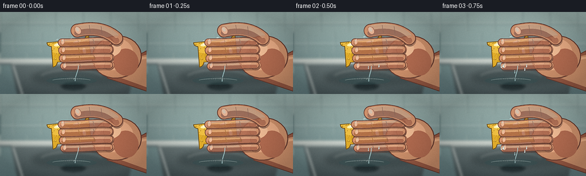
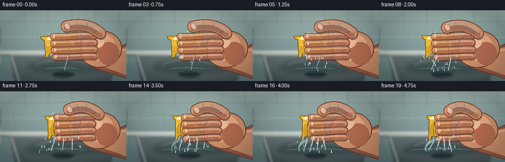
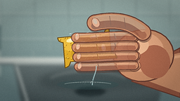
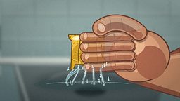
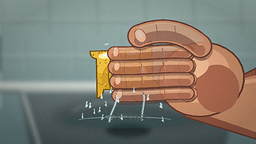

CODING AGENTS AS PIXEL WORLD MODELS
traex/DeepSeek-V4.1-Flash · phygen_011
点击播放 · 原生 RGB 像素
逐轮保存的候选
回放视频、检查图与代码变化。
每份候选均可单独播放。实际图片检查记录在下方工具轨迹中。
候选 01播放与检查图
点击播放 · 原生 RGB 像素


展开代码变化
--- 上一保存版本
+++ 本次保存版本
@@ -0,0 +1,789 @@
+from __future__ import annotations
+
+import math
+from pathlib import Path
+
+import numpy as np
+from PIL import Image, ImageDraw, ImageFilter
+
+from artifact_io import save
+
+
+W, H = 256, 144
+N, FPS = 20, 4.0
+S = 4
+WW, HH = W * S, H * S
+CASE_DIR = Path(__file__).resolve().parent
+
+
+def hx(value: str) -> tuple[int, int, int]:
+ value = value.lstrip("#")
+ return tuple(int(value[i : i + 2], 16) for i in (0, 2, 4))
+
+
+def rgba(value: str | tuple[int, int, int], alpha: int = 255) -> tuple[int, int, int, int]:
+ color = hx(value) if isinstance(value, str) else value
+ return (*color, alpha)
+
+
+def pt(x: float, y: float) -> tuple[int, int]:
+ return int(round(x * S)), int(round(y * S))
+
+
+def sw(value: float) -> int:
+ return max(1, int(round(value * S)))
+
+
+def smoothstep(value: float) -> float:
+ value = max(0.0, min(1.0, value))
+ return value * value * (3.0 - 2.0 * value)
+
+
+def pressure_at(frame: int) -> float:
+ t = frame / (N - 1)
+ return smoothstep(0.05 + 0.95 * t) ** 1.16
+
+
+def vertical_gradient(top: str, bottom: str, size: tuple[int, int]) -> Image.Image:
+ width, height = size
+ a = np.asarray(hx(top), dtype=np.float32)
+ b = np.asarray(hx(bottom), dtype=np.float32)
+ t = np.linspace(0.0, 1.0, height, dtype=np.float32)[:, None, None]
+ array = a[None, None, :] * (1.0 - t) + b[None, None, :] * t
+ array = np.repeat(array, width, axis=1).clip(0, 255).astype(np.uint8)
+ return Image.fromarray(array, "RGB").convert("RGBA")
+
+
+def bezier(points: list[tuple[float, float]], count: int = 28) -> list[tuple[float, float]]:
+ """Evaluate a cubic Bezier from four control points."""
+ p0, p1, p2, p3 = points
+ result = []
+ for index in range(count):
+ t = index / (count - 1)
+ u = 1.0 - t
+ x = u**3 * p0[0] + 3 * u * u * t * p1[0] + 3 * u * t * t * p2[0] + t**3 * p3[0]
+ y = u**3 * p0[1] + 3 * u * u * t * p1[1] + 3 * u * t * t * p2[1] + t**3 * p3[1]
+ result.append((x, y))
+ return result
+
+
+def capsule_polygon(
+ points: list[tuple[float, float]], width: float
+) -> list[tuple[int, int]]:
+ left: list[tuple[float, float]] = []
+ right: list[tuple[float, float]] = []
+ half = width * 0.5
+ for index, (x, y) in enumerate(points):
+ before = points[max(0, index - 1)]
+ after = points[min(len(points) - 1, index + 1)]
+ dx, dy = after[0] - before[0], after[1] - before[1]
+ length = max(1e-6, math.hypot(dx, dy))
+ nx, ny = -dy / length, dx / length
+ left.append((x + nx * half, y + ny * half))
+ right.append((x - nx * half, y - ny * half))
+ polygon = left + list(reversed(right))
+ return [pt(x, y) for x, y in polygon]
+
+
+def draw_capsule(
+ draw: ImageDraw.ImageDraw,
+ points: list[tuple[float, float]],
+ width: float,
+ fill: tuple[int, int, int, int],
+ outline: tuple[int, int, int, int] | None = None,
+ outline_extra: float = 1.5,
+) -> None:
+ if outline is not None:
+ polygon = capsule_polygon(points, width + outline_extra * 2)
+ draw.polygon(polygon, fill=outline)
+ for x, y in (points[0], points[-1]):
+ radius = (width + outline_extra * 2) * 0.5
+ draw.ellipse(
+ (sw(x - radius), sw(y - radius), sw(x + radius), sw(y + radius)),
+ fill=outline,
+ )
+ polygon = capsule_polygon(points, width)
+ draw.polygon(polygon, fill=fill)
+ for x, y in (points[0], points[-1]):
+ radius = width * 0.5
+ draw.ellipse(
+ (sw(x - radius), sw(y - radius), sw(x + radius), sw(y + radius)),
+ fill=fill,
+ )
+
+
+def draw_stream(
+ draw: ImageDraw.ImageDraw,
+ points: list[tuple[float, float]],
+ width: float,
+ color: str,
+ alpha: int,
+) -> None:
+ scaled = [pt(x, y) for x, y in points]
+ draw.line(scaled, fill=rgba(color, alpha), width=sw(width), joint="curve")
+ for x, y in (points[0], points[-1]):
+ radius = width * 0.5
+ draw.ellipse(
+ (sw(x - radius), sw(y - radius), sw(x + radius), sw(y + radius)),
+ fill=rgba(color, alpha),
+ )
+
+
+def ellipse_points(
+ cx: float, cy: float, rx: float, ry: float, angle: float, count: int = 30
+) -> list[tuple[float, float]]:
+ radians = math.radians(angle)
+ ca, sa = math.cos(radians), math.sin(radians)
+ result = []
+ for index in range(count):
+ theta = 2.0 * math.pi * index / count
+ x, y = rx * math.cos(theta), ry * math.sin(theta)
+ result.append((cx + x * ca - y * sa, cy + x * sa + y * ca))
+ return result
+
+
+def draw_rotated_ellipse(
+ draw: ImageDraw.ImageDraw,
+ cx: float,
+ cy: float,
+ rx: float,
+ ry: float,
+ angle: float,
+ fill: tuple[int, int, int, int],
+ outline: tuple[int, int, int, int] | None = None,
+ outline_width: float = 1.0,
+) -> None:
+ polygon = [pt(x, y) for x, y in ellipse_points(cx, cy, rx, ry, angle)]
+ draw.polygon(polygon, fill=fill)
+ if outline is not None:
+ draw.line(polygon + [polygon[0]], fill=outline, width=sw(outline_width), joint="curve")
+
+
+def rounded_rect_points(
+ width: float, height: float, radius: float, segments: int = 9
+) -> list[tuple[float, float]]:
+ hw, hh = width * 0.5, height * 0.5
+ radius = min(radius, hw, hh)
+ corners = [
+ (hw - radius, -hh + radius, 180, 270),
+ (hw - radius, hh - radius, 270, 360),
+ (-hw + radius, hh - radius, 0, 90),
+ (-hw + radius, -hh + radius, 90, 180),
+ ]
+ result: list[tuple[float, float]] = []
+ for cx, cy, start, end in corners:
+ for index in range(segments):
+ theta = math.radians(start + (end - start) * index / (segments - 1))
+ result.append((cx + radius * math.cos(theta), cy + radius * math.sin(theta)))
+ return result
+
+
+def sponge_transform(
+ lx: float, ly: float, p: float, center: tuple[float, float], angle: float
+) -> tuple[float, float]:
+ sx = 1.0 - 0.315 * p
+ sy = 1.0 + 0.125 * p
+ x = lx * sx
+ y = ly * sy
+ # The compressed middle bows outward while the gripped edges flatten.
+ y += math.sin(math.pi * min(1.0, abs(lx) / 42.0)) * (1.4 * p if ly > 0 else -1.4 * p)
+ radians = math.radians(angle)
+ ca, sa = math.cos(radians), math.sin(radians)
+ return center[0] + x * ca - y * sa, center[1] + x * sa + y * ca
+
+
+def make_background() -> Image.Image:
+ image = vertical_gradient("#a7c0bc", "#647f82", (WW, HH))
+ draw = ImageDraw.Draw(image)
+
+ # A tiled wall behind the action.
+ for y in (20, 56, 92):
+ draw.line((0, sw(y), WW, sw(y)), fill=rgba("#c8d7d2", 92), width=sw(1.2))
+ draw.line((0, sw(y + 1.4), WW, sw(y + 1.4)), fill=rgba("#4f6d70", 62), width=sw(0.8))
+ for row, y in enumerate((0, 36, 72)):
+ offset = 24 if row % 2 else 0
+ for x in range(-48 + offset, 300, 48):
+ draw.line((sw(x), sw(y), sw(x), sw(y + 36)), fill=rgba("#bed0cb", 75), width=sw(1.1))
+ draw.line((sw(x + 1), sw(y), sw(x + 1), sw(y + 36)), fill=rgba("#516e70", 50), width=sw(0.7))
+
+ # Counter lip and stainless sink basin.
+ draw.rectangle((0, sw(82), WW, sw(92)), fill=rgba("#c1cbc7"))
+ draw.line((0, sw(84), WW, sw(84)), fill=rgba("#f0f3ec", 190), width=sw(1.3))
+ draw.line((0, sw(91), WW, sw(91)), fill=rgba("#526164", 160), width=sw(2.0))
+ basin = vertical_gradient("#9eaaa8", "#4b595b", (WW, HH))
+ basin_mask = Image.new("L", (WW, HH), 0)
+ bd = ImageDraw.Draw(basin_mask)
+ bd.polygon(
+ [pt(18, 90), pt(238, 90), pt(224, 151), pt(31, 151)],
+ fill=255,
+ )
+ image.paste(basin, (0, 0), basin_mask)
+ draw = ImageDraw.Draw(image)
+ draw.line((sw(20), sw(91), sw(236), sw(91)), fill=rgba("#e2e8e4", 180), width=sw(1.1))
+ draw.line((sw(34), sw(147), sw(221), sw(147)), fill=rgba("#d3dcda", 65), width=sw(1.0))
+ draw.line((sw(23), sw(94), sw(39), sw(145)), fill=rgba("#d5dfdc", 75), width=sw(2.0))
+
+ # Drain and faint reflected highlights keep the sink legible without stealing focus.
+ draw_rotated_ellipse(draw, 128, 129, 22, 8, 0, rgba("#303d3f", 235), rgba("#182426", 235), 1.0)
+ for x in range(112, 146, 5):
+ draw.line((sw(x), sw(125), sw(x + 1), sw(133)), fill=rgba("#111a1c", 190), width=sw(1.1))
+ draw.arc((sw(106), sw(121), sw(150), sw(137)), 195, 345, fill=rgba("#bcc9c7", 100), width=sw(1.0))
+ draw.arc((sw(66), sw(101), sw(184), sw(137)), 205, 335, fill=rgba("#e0e8e5", 42), width=sw(1.2))
+ image = image.filter(ImageFilter.GaussianBlur(radius=2.1 * S))
+ return image
+
+
+def make_pores(rng: np.random.Generator) -> list[tuple[float, float, float, float]]:
+ pores = []
+ for _ in range(92):
+ lx = rng.uniform(-38.0, 38.0)
+ ly = rng.uniform(-23.0, 23.0)
+ rx = rng.uniform(0.55, 1.65)
+ ry = rng.uniform(0.45, 1.35)
+ pores.append((lx, ly, rx, ry))
+ return pores
+
+
+PORE_DATA = make_pores(np.random.default_rng(81))
+
+
+def draw_sponge(image: Image.Image, frame: int, p: float) -> tuple[float, float, float, float, float]:
+ center = (124.0 + 0.8 * p, 68.0 + 2.5 * p)
+ angle = -5.0 + 6.5 * p
+ width, height, radius = 82.0, 51.0, 7.5
+ outline_local = rounded_rect_points(width, height, radius, 10)
+ polygon = []
+ for index, (lx, ly) in enumerate(outline_local):
+ theta = 2.0 * math.pi * index / len(outline_local)
+ roughness = 1.0 + 0.011 * math.sin(7.0 * theta + 0.9) + 0.006 * math.sin(13.0 * theta)
+ polygon.append(sponge_transform(lx * roughness, ly * roughness, p, center, angle))
+
+ mask = Image.new("L", (WW, HH), 0)
+ ImageDraw.Draw(mask).polygon([pt(x, y) for x, y in polygon], fill=255)
+
+ layer = Image.new("RGBA", (WW, HH), (0, 0, 0, 0))
+ draw = ImageDraw.Draw(layer)
+ draw.polygon([pt(x, y) for x, y in polygon], fill=rgba("#e1ad2b"))
+
+ shade = Image.new("RGBA", (WW, HH), (0, 0, 0, 0))
+ sd = ImageDraw.Draw(shade)
+ # Broad warm light and lower-edge shadow.
+ draw_rotated_ellipse(
+ sd,
+ center[0] - 8,
+ center[1] - 12,
+ 34,
+ 17,
+ angle - 3,
+ rgba("#ffd75e", 118),
+ )
+ draw_rotated_ellipse(
+ sd,
+ center[0] + 15,
+ center[1] + 8,
+ 38,
+ 24,
+ angle,
+ rgba("#a97718", 68),
+ )
+ draw_rotated_ellipse(
+ sd,
+ center[0] + 31,
+ center[1] + 7,
+ 15,
+ 27,
+ angle,
+ rgba("#815d14", 92),
+ )
+ layer = Image.alpha_composite(layer, shade)
+ draw = ImageDraw.Draw(layer)
+
+ # Pores stretch vertically and narrow horizontally under compression.
+ for lx, ly, rx, ry in PORE_DATA:
+ px, py = sponge_transform(lx, ly, p, center, angle)
+ pore_rx = max(0.45, rx * (1.0 - 0.22 * p))
+ pore_ry = ry * (1.0 + 0.15 * p)
+ draw_rotated_ellipse(draw, px + 0.25, py + 0.25, pore_rx, pore_ry, angle, rgba("#aa7918", 190))
+ draw_rotated_ellipse(
+ draw,
+ px - 0.18,
+ py - 0.23,
+ pore_rx * 0.70,
+ pore_ry * 0.65,
+ angle,
+ rgba("#f3c94d", 118),
+ )
+
+ # Compression creases become sharper as the hand closes.
+ for crease_index, lx in enumerate((-18.0, 1.0, 19.0)):
+ visible = smoothstep((p - 0.08 * crease_index) / 0.62)
+ if visible <= 0.0:
+ continue
+ points = []
+ for step in range(16):
+ ly = -20.0 + 40.0 * step / 15.0
+ bend = 1.6 * math.sin(step * 0.48 + crease_index) * visible
+ points.append(sponge_transform(lx + bend, ly, p, center, angle))
+ draw_stream(draw, points, 0.85 + 0.35 * visible, "#805a12", int(90 * visible))
+ shifted = [(x + 1.0, y) for x, y in points]
+ draw_stream(draw, shifted, 0.55, "#ffe56a", int(82 * visible))
+
+ # Wet highlights.
+ for gx, gy, grx, gry, ga in (
+ (-20, -13, 9.0, 3.0, 135),
+ (-7, -8, 5.0, 2.0, 115),
+ (12, -15, 7.0, 2.1, 95),
+ (23, 2, 3.0, 5.5, 72),
+ ):
+ px, py = sponge_transform(gx, gy, p, center, angle)
+ draw_rotated_ellipse(draw, px, py, grx, gry, angle - 8, rgba("#fff3b0", ga))
+ draw_rotated_ellipse(draw, px - 0.8, py - 0.4, grx * 0.42, gry * 0.32, angle - 8, rgba("#ffffff", 150))
+
+ layer.putalpha(mask)
+ image.alpha_composite(layer)
+ draw = ImageDraw.Draw(image)
+ draw.line([pt(x, y) for x, y in polygon + [polygon[0]]], fill=rgba("#705018", 235), width=sw(1.25), joint="curve")
+
+ # Return the transformed visual bounds for the water and hand animation.
+ left = min(x for x, _ in polygon)
+ right = max(x for x, _ in polygon)
+ top = min(y for _, y in polygon)
+ bottom = max(y for _, y in polygon)
+ return left, right, top, bottom, angle
+
+
+def draw_hand_back(image: Image.Image, frame: int, p: float) -> tuple[float, float, float]:
+ draw = ImageDraw.Draw(image)
+ hand_cx = 204.0 - 5.5 * p
+ palm_cy = 79.0 + 0.8 * p
+ skin_dark = rgba("#9f5d46")
+ skin = rgba("#d59670")
+ skin_light = rgba("#efb18a")
+ outline = rgba("#6f4134", 235)
+
+ arm_points = [
+ (hand_cx + 10, palm_cy + 11),
+ (256, 68),
+ (256, 139),
+ (hand_cx - 17, palm_cy + 37),
+ ]
+ draw.polygon([pt(x, y) for x, y in arm_points], fill=skin_dark)
+ draw.line([pt(x, y) for x, y in arm_points + [arm_points[0]]], fill=outline, width=sw(1.5), joint="curve")
+ draw.polygon(
+ [pt(hand_cx + 5, palm_cy + 8), pt(256, 75), pt(256, 132), pt(hand_cx - 8, palm_cy + 31)],
+ fill=skin,
+ )
+ draw.line([pt(hand_cx + 2, palm_cy + 9), pt(256, 80)], fill=rgba("#f0b38a", 170), width=sw(4.0))
+
+ draw_rotated_ellipse(
+ draw,
+ hand_cx,
+ palm_cy,
+ 43.0,
+ 37.0,
+ -8.0,
+ skin,
+ outline,
+ 1.7,
+ )
+ draw_rotated_ellipse(
+ draw,
+ hand_cx - 5.0,
+ palm_cy - 5.0,
+ 34.0,
+ 28.0,
+ -10.0,
+ skin_light,
+ )
+ draw_rotated_ellipse(
+ draw,
+ hand_cx + 16.0,
+ palm_cy + 9.0,
+ 22.0,
+ 24.0,
+ -8.0,
+ rgba("#b86f53", 175),
+ )
+ draw_rotated_ellipse(
+ draw,
+ hand_cx - 11.0,
+ palm_cy - 12.0,
+ 19.0,
+ 12.0,
+ -16.0,
+ rgba("#f7c29b", 130),
+ )
+
+ # Soft knuckle pads where the wrapped fingers leave the palm.
+ for index, ky in enumerate((53, 66, 80, 94)):
+ draw_rotated_ellipse(
+ draw,
+ hand_cx - 15 + index * 0.7,
+ ky,
+ 9.0,
+ 7.5,
+ -8,
+ rgba("#dc9a73"),
+ rgba("#8b513f", 155),
+ 0.7,
+ )
+ return hand_cx, palm_cy, 0.0
+
+
+def draw_finger(
+ image: Image.Image,
+ frame: int,
+ p: float,
+ index: int,
+ hand_cx: float,
+) -> None:
+ base_ys = (51.5, 65.3, 79.2, 93.0)
+ widths = (11.8, 12.8, 12.5, 10.7)
+ y0 = base_ys[index]
+ tremble = 0.20 * math.sin(frame * 2.1 + index * 1.7) * smoothstep(p)
+ start_x = hand_cx - 15.0 + index * 0.6
+ tip_x = 108.0 + 11.5 * p + index * 1.2 + tremble
+ curl = (index - 1.5) * 0.45 * p
+ start = (start_x, y0 + tremble)
+ control1 = (start_x - 20.0, y0 - 1.5 + index * 0.35)
+ control2 = (tip_x + 26.0, y0 + 2.8 + curl)
+ tip = (tip_x, y0 + 2.0 + curl + tremble)
+ points = bezier([start, control1, control2, tip], 24)
+ width = widths[index]
+
+ shadow = Image.new("RGBA", (WW, HH), (0, 0, 0, 0))
+ sd = ImageDraw.Draw(shadow)
+ shadow_points = [(x + 1.5, y + 3.3) for x, y in points]
+ draw_capsule(sd, shadow_points, width + 1.2, rgba("#4e2f26", 95))
+ image.alpha_composite(shadow)
+
+ layer = Image.new("RGBA", (WW, HH), (0, 0, 0, 0))
+ draw = ImageDraw.Draw(layer)
+ draw_capsule(
+ draw,
+ points,
+ width,
+ rgba("#d79570"),
+ rgba("#714336", 235),
+ 1.2,
+ )
+ lower = [(x, y + width * 0.22) for x, y in points]
+ draw_capsule(draw, lower, width * 0.52, rgba("#b96f54", 185))
+ upper = [(x, y - width * 0.23) for x, y in points]
+ draw_capsule(draw, upper, width * 0.36, rgba("#f2b58e", 185))
+
+ # Joint folds.
+ for fraction in (0.38, 0.68):
+ pos = min(len(points) - 1, int(fraction * (len(points) - 1)))
+ x, y = points[pos]
+ fold = width * 0.34
+ draw.line(
+ (sw(x - 1.5), sw(y - fold), sw(x + 0.5), sw(y + fold)),
+ fill=rgba("#a45f49", 155),
+ width=sw(0.75),
+ )
+ draw.line(
+ (sw(x - 0.7), sw(y - fold + 0.8), sw(x + 1.0), sw(y + fold - 0.6)),
+ fill=rgba("#f4bd96", 115),
+ width=sw(0.55),
+ )
+
+ # A small nail at each fingertip makes the hand read immediately.
+ nail_angle = 8.0 + index * 2.0
+ draw_rotated_ellipse(
+ draw,
+ tip_x + 1.6,
+ tip[1] - 1.4,
+ 2.8,
+ 5.0,
+ nail_angle,
+ rgba("#edba9b"),
+ rgba("#ad6b56", 210),
+ 0.55,
+ )
+ draw_rotated_ellipse(
+ draw,
+ tip_x + 0.7,
+ tip[1] - 2.7,
+ 1.25,
+ 2.6,
+ nail_angle,
+ rgba("#ffe0c7", 190),
+ )
+ image.alpha_composite(layer)
+
+
+def draw_thumb(image: Image.Image, frame: int, p: float, hand_cx: float) -> None:
+ tremble = 0.16 * math.sin(frame * 1.7 + 0.5) * p
+ start = (hand_cx - 1.0, 46.0)
+ tip = (135.0 + 8.0 * p, 32.5 + 7.0 * p + tremble)
+ points = bezier(
+ [
+ start,
+ (hand_cx - 20.0, 29.0),
+ (160.0 - 3.0 * p, 27.0 + 2.0 * p),
+ tip,
+ ],
+ 28,
+ )
+ shadow = Image.new("RGBA", (WW, HH), (0, 0, 0, 0))
+ sd = ImageDraw.Draw(shadow)
+ draw_capsule(sd, [(x + 1.5, y + 3.5) for x, y in points], 22.0, rgba("#4c2e26", 90))
+ image.alpha_composite(shadow)
+
+ layer = Image.new("RGBA", (WW, HH), (0, 0, 0, 0))
+ draw = ImageDraw.Draw(layer)
+ draw_capsule(draw, points, 21.0, rgba("#d99872"), rgba("#6e4034", 235), 1.4)
+ draw_capsule(draw, [(x, y + 4.2) for x, y in points], 10.5, rgba("#b96f54", 170))
+ draw_capsule(draw, [(x, y - 4.8) for x, y in points], 8.0, rgba("#f4b992", 185))
+ for fraction in (0.42, 0.72):
+ pos = min(len(points) - 1, int(fraction * (len(points) - 1)))
+ x, y = points[pos]
+ draw.line(
+ (sw(x - 1.0), sw(y - 7.0), sw(x + 1.0), sw(y + 7.0)),
+ fill=rgba("#a45e48", 140),
+ width=sw(0.75),
+ )
+ draw_rotated_ellipse(
+ draw,
+ tip[0] + 1.0,
+ tip[1] - 0.5,
+ 5.2,
+ 7.2,
+ -30,
+ rgba("#edba9b"),
+ rgba("#a96752", 215),
+ 0.7,
+ )
+ draw_rotated_ellipse(
+ draw,
+ tip[0] + 0.2,
+ tip[1] - 2.0,
+ 2.5,
+ 4.0,
+ -30,
+ rgba("#ffe2ca", 195),
+ )
+ image.alpha_composite(layer)
+
+
+def make_drop_data(rng: np.random.Generator) -> list[dict[str, float]]:
+ drops = []
+ for _ in range(78):
+ birth = int(rng.integers(2, N))
+ x = rng.uniform(85.0, 161.0)
+ y = rng.uniform(91.0, 99.0)
+ vx = rng.uniform(-2.8, 2.8)
+ vy = rng.uniform(5.0, 8.0)
+ size = rng.uniform(0.65, 1.55)
+ drops.append({"birth": birth, "x": x, "y": y, "vx": vx, "vy": vy, "size": size})
+ return drops
+
+
+DROP_DATA = make_drop_data(np.random.default_rng(409))
+
+
+def draw_water(
+ image: Image.Image,
+ frame: int,
+ p: float,
+ sponge_bounds: tuple[float, float, float, float, float],
+) -> None:
+ left, right, top, bottom, angle = sponge_bounds
+ overlay = Image.new("RGBA", (WW, HH), (0, 0, 0, 0))
+ draw = ImageDraw.Draw(overlay)
+
+ # Sink puddle grows and catches highlights as more water lands.
+ puddle_w = 44.0 + 34.0 * p
+ draw_rotated_ellipse(
+ draw,
+ 125.0,
+ 120.5,
+ puddle_w,
+ 7.0 + 1.5 * p,
+ 0,
+ rgba("#335456", 86),
+ )
+ draw.arc(
+ (sw(125 - puddle_w * 0.78), sw(116.5), sw(125 + puddle_w * 0.78), sw(124.5)),
+ 195,
+ 342,
+ fill=rgba("#d9f2ee", 100),
+ width=sw(0.9),
+ )
+
+ stream_count = 1 + int(math.floor(3.55 * p + 0.01))
+ for index in range(stream_count):
+ phase = index * 1.31 + 0.4
+ spread = (index + 0.8) / (stream_count + 0.2)
+ start_x = left + 5.0 + spread * (right - left - 10.0)
+ start_y = bottom - 2.0 + 0.7 * math.sin(frame + index)
+ width = 0.72 + 1.75 * p + 0.28 * math.sin(frame * 0.9 + phase)
+ sway = 2.2 * math.sin(frame * 0.55 + phase)
+ end_x = start_x - 2.0 + (index - 1.5) * 3.0 + sway
+ end_y = 120.0 + 1.4 * math.sin(frame * 0.8 + phase)
+ points = bezier(
+ [
+ (start_x, start_y),
+ (start_x + 1.2 * math.sin(phase), start_y + 8.0),
+ (end_x - sway * 0.4, end_y - 8.0),
+ (end_x, end_y),
+ ],
+ 24,
+ )
+ draw_stream(draw, points, width + 0.9, "#8cc6cc", 125)
+ draw_stream(draw, points, max(0.45, width * 0.45), "#f2ffff", 215)
+ if p > 0.32:
+ draw_stream(draw, [(x + 0.5, y) for x, y in points], 0.55, "#ffffff", 150)
+
+ # A wider low arc at maximum pressure makes the final squeeze feel forceful.
+ if p > 0.55:
+ intensity = smoothstep((p - 0.55) / 0.45)
+ for index in range(3):
+ sx = left + 7.0 + index * 4.5
+ points = bezier(
+ [
+ (sx, bottom - 1.0),
+ (sx - 7.0 - index * 2.0, bottom + 7.0),
+ (sx - 13.0 - index * 4.0, 111.0),
+ (sx - 8.0 - index * 5.0, 121.0),
+ ],
+ 22,
+ )
+ draw_stream(draw, points, 1.1 + intensity, "#93cfd4", int(160 * intensity))
+ draw_stream(draw, points, 0.55, "#f5ffff", int(195 * intensity))
+
+ # Falling droplets have deterministic paths and intensify with the grip.
+ for index, drop in enumerate(DROP_DATA):
+ age = frame - drop["birth"]
+ if age < 0:
+ continue
+ local_pressure = pressure_at(drop["birth"])
+ if index % 5 == 0 and local_pressure < 0.25:
+ continue
+ x = drop["x"] + drop["vx"] * age + 0.20 * age * age * math.sin(index * 1.9)
+ y = drop["y"] + drop["vy"] * age + 0.24 * age * age
+ if y > 124.0:
+ continue
+ speed = drop["vy"] + 0.48 * age
+ length = min(4.5, 0.9 + speed * 0.34)
+ dx = drop["vx"] / max(speed, 0.1) * length
+ points = [(x, y - length), (x + dx, y + length * 0.3)]
+ draw_stream(draw, points, drop["size"] * 1.3, "#75b7bf", 155)
+ draw_stream(draw, points, drop["size"] * 0.62, "#f2ffff", 225)
+ draw.ellipse(
+ (sw(x - drop["size"] * 0.7), sw(y - drop["size"] * 0.7), sw(x + drop["size"] * 0.7), sw(y + drop["size"] * 0.7)),
+ fill=rgba("#e8ffff", 215),
+ )
+
+ # Small splash crowns where streams meet the basin.
+ for index in range(stream_count):
+ spread = (index + 0.8) / (stream_count + 0.2)
+ cx = left + 5.0 + spread * (right - left - 10.0) - 2.0 + (index - 1.5) * 3.0
+ pulse = (frame * 0.55 + index * 0.37) % 1.0
+ radius = 2.0 + 3.2 * pulse
+ draw.arc(
+ (sw(cx - radius), sw(117.0 - radius * 0.55), sw(cx + radius), sw(122.0 + radius * 0.3)),
+ 195,
+ 345,
+ fill=rgba("#e5fbf8", int(190 * (1.0 - pulse))),
+ width=sw(0.8),
+ )
+ if p > 0.4:
+ for side in (-1, 1):
+ tipx = cx + side * (3.0 + 2.0 * pulse)
+ tipy = 116.5 - 2.6 * pulse
+ draw.line(
+ (sw(cx + side * 1.0), sw(120.0), sw(tipx), sw(tipy)),
+ fill=rgba("#e9ffff", int(145 * (1.0 - pulse))),
+ width=sw(0.65),
+ )
+
+ # Ripples in the growing puddle.
+ for index in range(4):
+ phase = (frame * 0.31 + index * 0.24) % 1.0
+ radius = 5.0 + phase * (13.0 + 7.0 * p)
+ draw.arc(
+ (sw(125 - radius), sw(117.5 - radius * 0.24), sw(125 + radius), sw(123.5 + radius * 0.24)),
+ 195,
+ 345,
+ fill=rgba("#d8f2ed", int((1.0 - phase) * (42 + 55 * p))),
+ width=sw(0.55),
+ )
+
+ image.alpha_composite(overlay)
+
+
+def draw_wet_glints(image: Image.Image, frame: int, p: float, bounds: tuple[float, float, float, float, float]) -> None:
+ left, right, top, bottom, angle = bounds
+ overlay = Image.new("RGBA", (WW, HH), (0, 0, 0, 0))
+ draw = ImageDraw.Draw(overlay)
+ for index in range(5):
+ x = left + 12.0 + (right - left - 24.0) * (index + 0.5) / 5.0
+ y = top + 8.0 + 5.0 * math.sin(index * 1.7 + frame * 0.45)
+ size = 0.9 + 0.35 * math.sin(index + p * 2.0)
+ draw_rotated_ellipse(
+ draw,
+ x,
+ y,
+ size * 1.8,
+ size * 0.65,
+ angle - 8,
+ rgba("#e9ffff", 125),
+ )
+ image.alpha_composite(overlay)
+
+
+def render_frame(frame: int) -> np.ndarray:
+ p = pressure_at(frame)
+ rng = np.random.default_rng(1000 + frame)
+ image = make_background()
+
+ # Blurred contact shadow above the sink.
+ shadow = Image.new("RGBA", (WW, HH), (0, 0, 0, 0))
+ sd = ImageDraw.Draw(shadow)
+ draw_rotated_ellipse(sd, 145, 112 + 2 * p, 90 + 4 * p, 16, -2, rgba("#172324", 80))
+ shadow = shadow.filter(ImageFilter.GaussianBlur(5.0 * S))
+ image.alpha_composite(shadow)
+
+ hand_cx, palm_cy, _ = draw_hand_back(image, frame, p)
+ bounds = draw_sponge(image, frame, p)
+ draw_wet_glints(image, frame, p, bounds)
+
+ # Fingers are drawn front-to-back in a natural overlap order.
+ for index in (3, 2, 1, 0):
+ draw_finger(image, frame, p, index, hand_cx)
+ draw_thumb(image, frame, p, hand_cx)
+ draw_water(image, frame, p, bounds)
+
+ # Final light grade: vignette, a little grain, and a restrained sharpening pass.
+ rgb = image.convert("RGB").resize((W, H), Image.Resampling.LANCZOS)
+ array = np.asarray(rgb, dtype=np.float32)
+ yy, xx = np.mgrid[0:H, 0:W]
+ nx = (xx - W * 0.5) / (W * 0.5)
+ ny = (yy - H * 0.52) / (H * 0.54)
+ vignette = np.clip(1.0 - 0.20 * (nx * nx + ny * ny), 0.76, 1.0)
+ array *= vignette[..., None]
+
+ # Warm highlights and cool shadows.
+ luminance = array.mean(axis=2, keepdims=True) / 255.0
+ warm = np.array([4.0, 1.2, -1.8], dtype=np.float32)
+ cool = np.array([-2.2, 0.5, 3.0], dtype=np.float32)
+ array += warm[None, None, :] * (luminance**1.6) + cool[None, None, :] * ((1.0 - luminance) ** 1.5) * 0.42
+ grain = rng.normal(0.0, 1.35, size=(H, W, 1)).astype(np.float32)
+ array += grain
+ array = np.clip(array, 0, 255).astype(np.uint8)
+
+ result = Image.fromarray(array, "RGB")
+ result = result.filter(ImageFilter.UnsharpMask(radius=0.55, percent=72, threshold=2))
+ return np.asarray(result, dtype=np.uint8)
+
+
+def main() -> None:
+ frames = np.stack([render_frame(index) for index in range(N)])
+ save(frames, CASE_DIR)
+ print(f"saved {len(frames)} frames to {CASE_DIR}")
+
+
+if __name__ == "__main__":
+ main()
可观测工具轨迹
实际执行的命令与返回图片。
命令 1exit 0
/bin/bash -c "pwd && rg --files -g 'prompt.txt' -g 'GENERATION_RULES.md' -g 'task_spec.json' -g '"'!node_modules'"' -g '"'!venv'"'"
命令 2exit 0
/bin/bash -c 'git status --short && find . -maxdepth 2 -type f | sort | head -200'
命令 3exit 0
/bin/bash -c 'cat prompt.txt'
命令 4exit 0
/bin/bash -c 'cat GENERATION_RULES.md'
命令 5exit 0
/bin/bash -c 'cat task_spec.json'
命令 6exit 0
/bin/bash -c "sed -n '1,260p' artifact_io.py"
命令 7exit 0
/bin/bash -c "sed -n '1,260p' player_template.html"
命令 8exit 0
/bin/bash -c 'python generate.py'
命令 9exit 0
/bin/bash -c "python - <<'PY'
from pathlib import Path
from PIL import Image
import numpy as np
import json
p=Path('.')
frames=[np.asarray(Image.open(p/'frames'/f'{i:02d}.png')) for i in range(20)]
print('frames', len(frames), 'shape', frames[0].shape, 'dtype', frames[0].dtype)
print('range', min(int(f.min()) for f in frames), max(int(f.max()) for f in frames))
print('pixel std', float(np.std(np.stack(frames))))
print('adjacent mean diff', [round(float(np.abs(frames[i].astype(float)-frames[i-1]).mean()),2) for i in range(1,20)])
print('index bytes', (p/'index.html').stat().st_size, 'pixels bytes', (p/'pixels.npz').stat().st_size)
print('has save call', 'save(frames, CASE_DIR)' in (p/'generate.py').read_text())
PY"命令 10exit 0
/bin/bash -c "python - <<'PY'
from PIL import Image
from pathlib import Path
p=Path('index.html')
s=p.read_text()
start=s.index(\"const DATA=\")+11
end=s.index(',W=DATA.width',start)
import json
data=json.loads(s[start:end])
print('payload keys:', sorted(data))
print('id:', data['id'])
print('shape:', data['width'], data['height'], data['frames'], data['fps'])
print('first chars:', len(data['first']), 'deltas:', len(data['deltas']))
print('audio:', data['audio'])
print('caption:', data['caption'])
print('template tokens left:', '__DATA__' in s or '__ID__' in s)
PY"命令 11exit 0
/bin/bash -c "python - <<'PY'
from pathlib import Path
from PIL import Image
import base64, json, numpy as np
s=Path('index.html').read_text()
start=s.index('const DATA=')+11
end=s.index(',W=DATA.width',start)
data=json.loads(s[start:end])
def unpack(value):
return np.frombuffer(base64.b64decode(value), dtype='<u4').copy()
first=unpack(data['first']).reshape(144,256)
frames=[first]
for encoded in data['deltas']:
current=frames[-1].copy().reshape(-1)
packet=unpack(encoded)
i=0
while i < len(packet):
offset=int(packet[i]); count=int(packet[i+1]); i += 2
current[offset:offset+count]=packet[i:i+count]
i += count
frames.append(current.reshape(144,256))
expected=[]
for i in range(20):
rgb=np.asarray(Image.open(f'frames/{i:02d}.png'))
packed=(rgb[...,0].astype(np.uint32)<<16)|(rgb[...,1].astype(np.uint32)<<8)|rgb[...,2]
expected.append(packed)
print('delta decode exact:', all(np.array_equal(a,b) for a,b in zip(frames,expected)))
print('frames:', len(frames), 'deltas:', len(data['deltas']), 'unique frame hashes:', len({a.tobytes() for a in frames}))
PY"视觉工具实际返回图片 1

视觉工具实际返回图片 2

视觉工具实际返回图片 3

视觉工具实际返回图片 4

保存候选 1 份；完成命令 11 次；可验证图片返回 4 张。原始 API 响应与完整日志保留在本地。